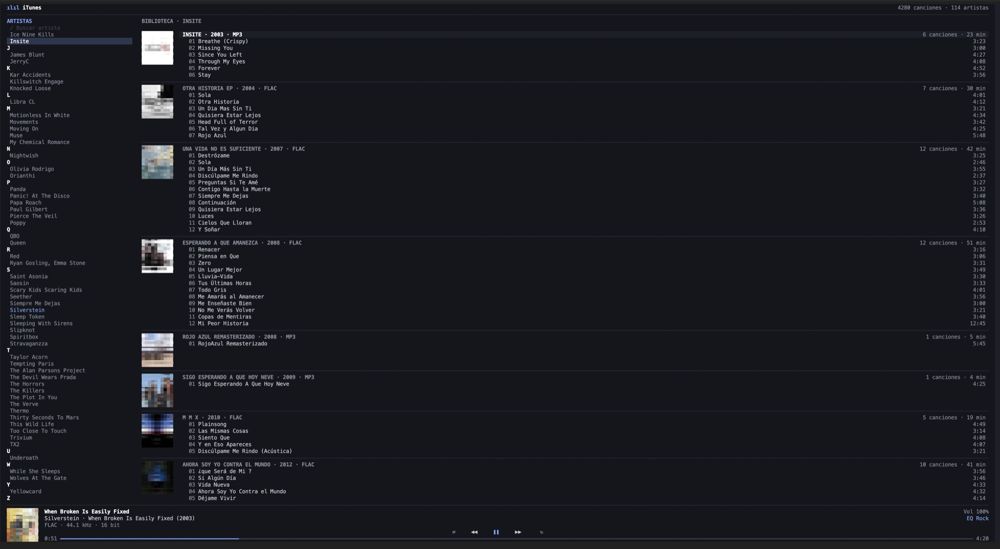
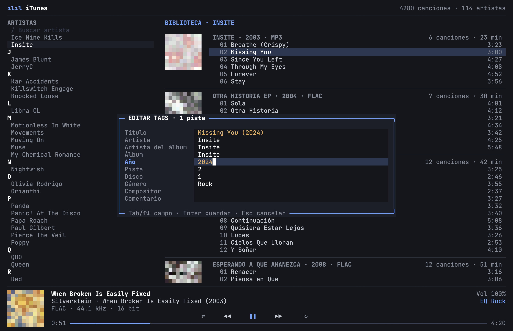
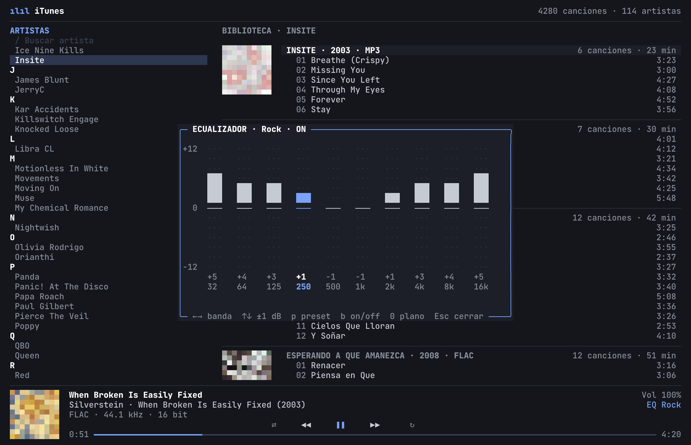
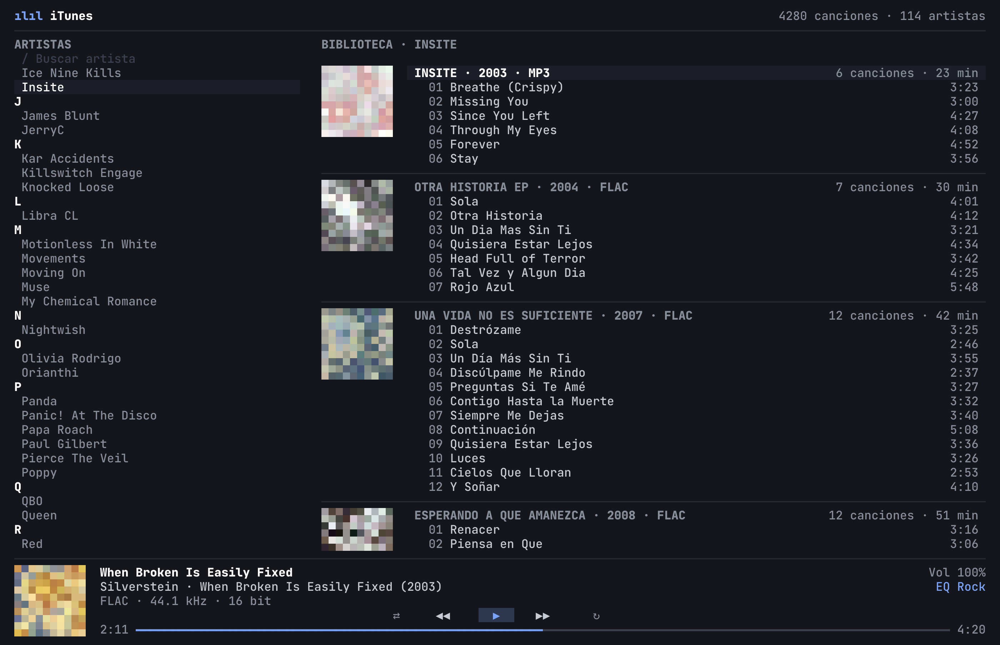
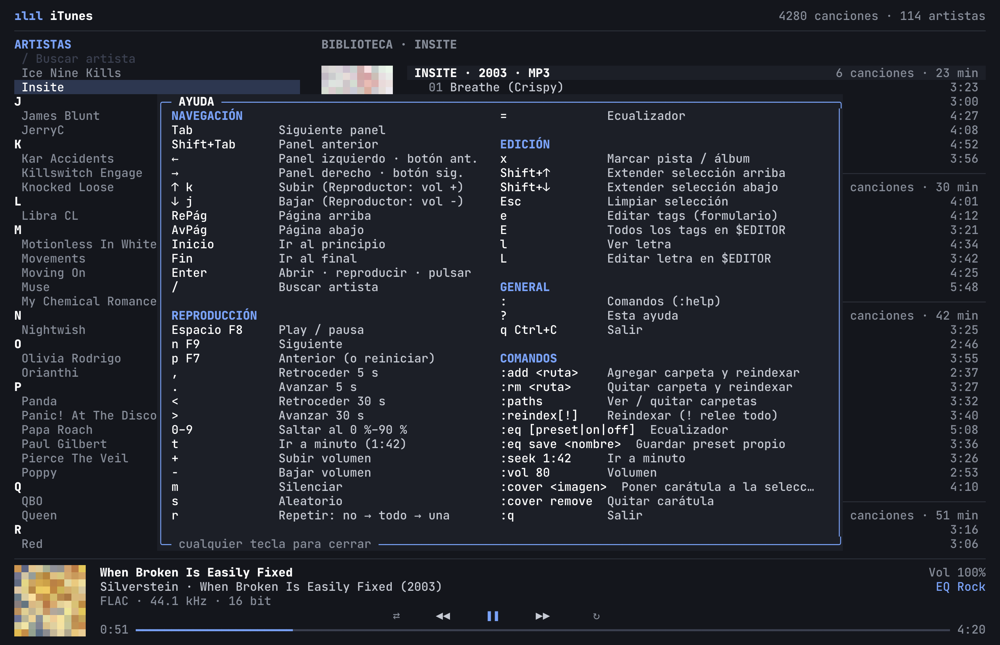
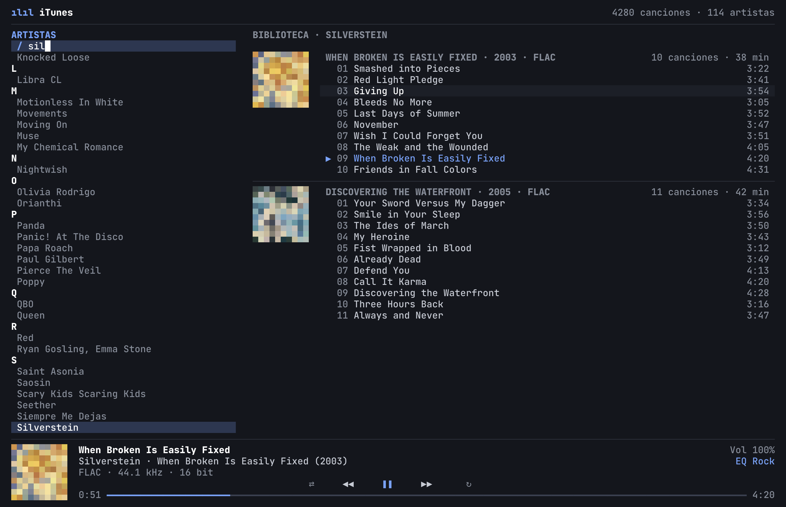
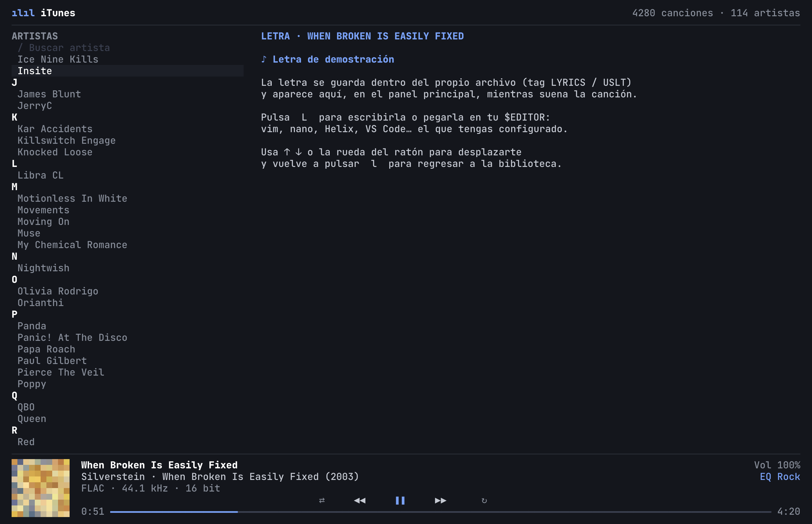

Audio sin pérdida, de verdad
FLAC, ALAC/AAC (.m4a), AIFF, CAF, MP3 y WAV a través de AVAudioEngine.
La barra muestra el formato real: FLAC · 44.1 kHz · 16 bit.
FLACALACAACAIFFCAFMP3WAV
v1.0.0 · firmado y notarizado por Apple
Un reproductor 100 % terminal para macOS con alma de iTunes clásico: FLAC, ALAC, AIFF, MP3, carátulas pintadas con píxeles, ecualizador de 10 bandas y editor de tags… todo sin soltar el teclado.
Demo interactiva
Haz clic dentro de la terminal y usa el teclado como en la app: Espacio play/pausa, e editar tags, = ecualizador, l letra, / buscar, ? ayuda. También funciona con el ratón.
Ventajas
FLAC, ALAC/AAC (.m4a), AIFF, CAF, MP3 y WAV a través de AVAudioEngine.
La barra muestra el formato real: FLAC · 44.1 kHz · 16 bit.
32 Hz a 16 kHz, ±12 dB, preamp automático para que nunca sature. 9 presets y los tuyos con :eq save.
Pulsa e: formulario para una pista o un álbum entero. Solo guarda los campos que tocaste. E abre todos los tags en tu $EDITOR.
Dibujadas con medios bloques ▀ en color real: dos píxeles por celda. Pon o quita carátulas con :cover.
F7 · F8 · F9, audífonos y Centro de Control funcionan aunque la terminal esté en segundo plano.
Escanea en paralelo y solo relee lo nuevo o modificado. Miles de canciones abren al instante. Si desconectas un disco externo, no olvida tus pistas.
Clic para reproducir, rueda para desplazarte, arrastra la barra de progreso para buscar.
l muestra la letra de la canción y L la edita en tu editor favorito.
Interfaz y comandos en español: :agregar, :rutas, :volumen, :carátula…
s aleatorio, r repite todo o una. Marca pistas con x o Shift+↑↓.
Un binario en Swift 6 de menos de 1 MB, sin Electron ni navegador escondido. Consume casi nada.
Developer ID + hardened runtime + ticket de Apple engrapado. Gatekeeper lo instala sin advertencias.
Capturas
Toca cualquier captura para verla en grande.







Atajos
:Instalar
El instalador trae TagLib incluido: no necesitas Homebrew. Instala itunes en /usr/local/bin.
itunes ~/Musicitunese4ce0d6ec732231947cf4f549def194606a4e86016daa3798cbd2aeb5a628a29
brew install taglib pkgconf
swift build -c release
cp .build/release/itunes /usr/local/bin/